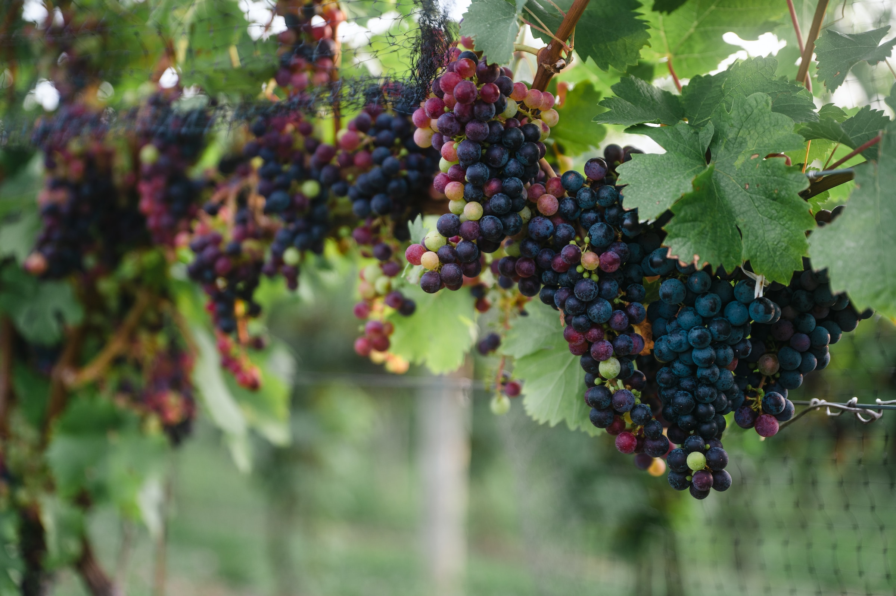
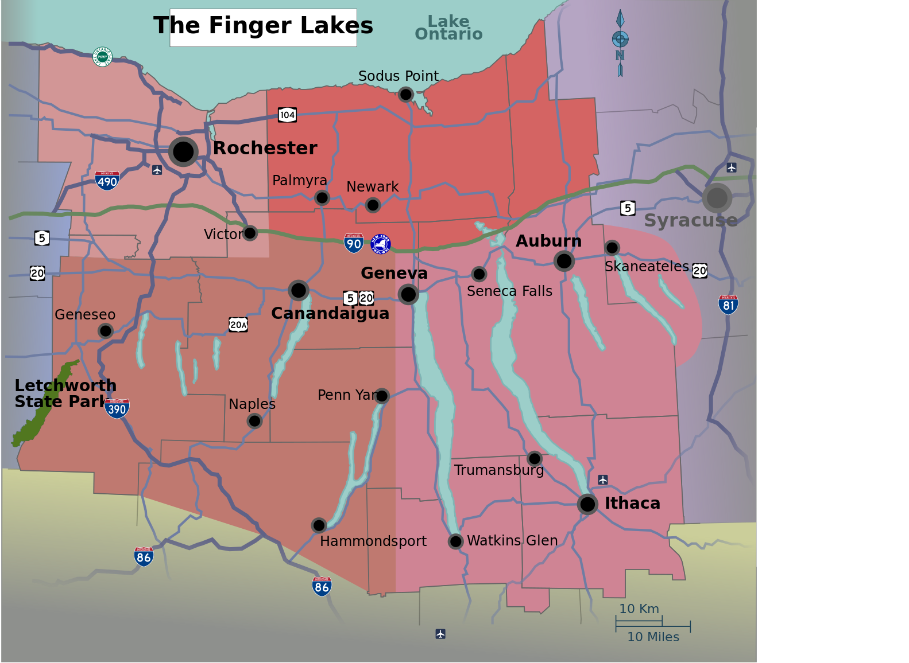

Overview
The Finger Lakes region in New York is renowned for its 11 long, narrow lakes, resembling fingers. This picturesque area is a haven for nature lovers, offering scenic landscapes, serene waterways, and charming small towns. Visitors can explore award-winning wineries, hike through lush trails, or kayak across crystal-clear lakes. With its tranquil atmosphere and vibrant culture, it promises a unique blend of relaxation and excitement. Year-round attractions like fall foliage, winter festivals, and summer adventures make it a must-visit destination for all.
History
The Finger Lakes region has a rich history dating back centuries. It was once home to the Haudenosaunee (Iroquois Confederacy), whose traditions continue to inspire the area. By the 19th century, it became a key hub for the abolitionist movement and the fight for women’s suffrage. Landmarks and museums celebrate these pivotal moments, preserving the legacy for future generations. Visitors can explore historic mansions, attend reenactments, and tour the birthplace of Susan B. Anthony. The region beautifully blends its cultural past with modern experiences.
Environment and Geology
Shaped by glaciers over millennia, the Finger Lakes region boasts breathtaking geological wonders. Rolling hills, dramatic waterfalls, and pristine gorges create a stunning backdrop for outdoor exploration. The diverse ecosystem is home to unique flora and fauna, offering something for every nature enthusiast. Popular destinations include Watkins Glen State Park and Taughannock Falls, where visitors marvel at towering cliffs and cascading water. Activities such as birdwatching, fishing, and hiking make this region a natural paradise for adventurers and eco-lovers alike.
Events and Activities
The Finger Lakes region is alive with vibrant events and activities year-round. Wine festivals and tastings at world-renowned vineyards draw enthusiasts from across the globe. Farmers’ markets showcase local produce, while hot air balloon festivals offer a breathtaking perspective of the landscape. In winter, visitors enjoy skiing and snowshoeing, while summer brings boating, fishing, and lakeside concerts. Art galleries, museums, and seasonal fairs add cultural flair to the region. From outdoor adventures to cultural exploration, the Finger Lakes offer endless opportunities to create unforgettable memories in every season.